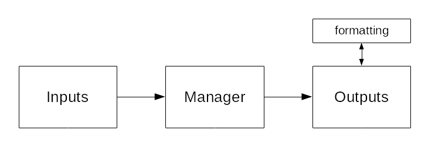

Concepts
NTrace uses the concept of input and output channels. An input channel generates log messages and an output channel takes those log messages and stores them somewhere, with optional formatting. In the middle is a Manager which keeps track of input and output channels and queues log messages.
There can be multiple input and output channels but there is only one manager.
Inputs
NTrace comes with one pre-defined input channel: a Module. You define the modules yourself by grouping files into them based